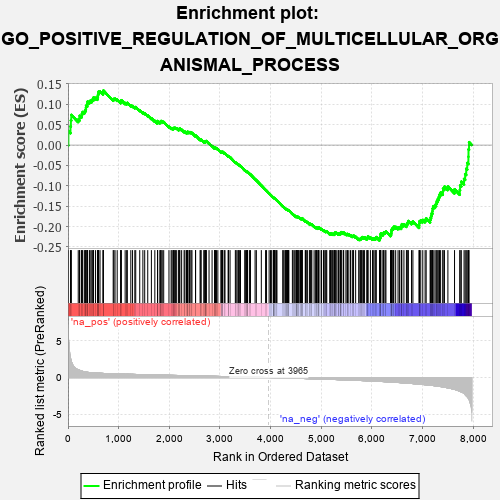
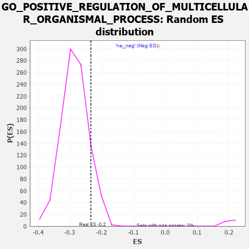

| | | Dataset | 7d |
| Phenotype | NoPhenotypeAvailable |
| Upregulated in class | na_neg |
| GeneSet | GO_POSITIVE_REGULATION_OF_MULTICELLULAR_ORGANISMAL_PROCESS |
| Enrichment Score (ES) | -0.2343321 |
| Normalized Enrichment Score (NES) | -0.8234186 |
| Nominal p-value | 0.8808554 |
| FDR q-value | 0.98452806 |
| FWER p-Value | 1.0 |
Table: GSEA Results Summary

Fig 1: Enrichment plot: GO_POSITIVE_REGULATION_OF_MULTICELLULAR_ORGANISMAL_PROCESS
Profile of the Running ES Score & Positions of GeneSet Members on the Rank Ordered List
| PROBE | GENE SYMBOL | GENE_TITLE | RANK IN GENE LIST | RANK METRIC SCORE | RUNNING ES | CORE ENRICHMENT | | 1 | SYT2 | | | 8 | 5.577 | 0.0343 | No |
| 2 | TGFB3 | | | 49 | 2.654 | 0.0459 | No |
| 3 | MC4R | | | 57 | 2.491 | 0.0608 | No |
| 4 | PTH2R | | | 65 | 2.249 | 0.0741 | No |
| 5 | BCL3 | | | 202 | 1.047 | 0.0629 | No |
| 6 | RHOH | | | 228 | 0.987 | 0.0659 | No |
| 7 | SMAD5 | | | 231 | 0.979 | 0.0719 | No |
| 8 | TBX20 | | | 267 | 0.880 | 0.0729 | No |
| 9 | HGF | | | 276 | 0.870 | 0.0773 | No |
| 10 | SHOX2 | | | 288 | 0.842 | 0.0812 | No |
| 11 | ARX | | | 322 | 0.782 | 0.0819 | No |
| 12 | DLL1 | | | 337 | 0.760 | 0.0848 | No |
| 13 | GSK3A | | | 351 | 0.745 | 0.0879 | No |
| 14 | TAPT1 | | | 354 | 0.743 | 0.0923 | No |
| 15 | ARNT | | | 357 | 0.741 | 0.0967 | No |
| 16 | SOX13 | | | 380 | 0.717 | 0.0984 | No |
| 17 | AXIN2 | | | 383 | 0.713 | 0.1027 | No |
| 18 | BAX | | | 387 | 0.711 | 0.1068 | No |
| 19 | MLH1 | | | 423 | 0.679 | 0.1065 | No |
| 20 | RRN3 | | | 438 | 0.667 | 0.1089 | No |
| 21 | LRP1 | | | 470 | 0.648 | 0.1089 | No |
| 22 | CDC20 | | | 480 | 0.644 | 0.1119 | No |
| 23 | MRTFB | | | 503 | 0.628 | 0.1130 | No |
| 24 | MYOD1 | | | 504 | 0.628 | 0.1169 | No |
| 25 | SRF | | | 542 | 0.615 | 0.1160 | No |
| 26 | CCNB1 | | | 581 | 0.601 | 0.1148 | No |
| 27 | DDX56 | | | 584 | 0.600 | 0.1184 | No |
| 28 | ALX1 | | | 590 | 0.598 | 0.1215 | No |
| 29 | PITX3 | | | 594 | 0.596 | 0.1249 | No |
| 30 | FBXW8 | | | 601 | 0.594 | 0.1279 | No |
| 31 | DHX33 | | | 605 | 0.593 | 0.1312 | No |
| 32 | GLMN | | | 632 | 0.583 | 0.1315 | No |
| 33 | MRE11 | | | 693 | 0.560 | 0.1272 | No |
| 34 | XRCC6 | | | 694 | 0.560 | 0.1308 | No |
| 35 | FST | | | 698 | 0.560 | 0.1339 | No |
| 36 | HMGB2 | | | 892 | 0.507 | 0.1119 | No |
| 37 | STOX1 | | | 905 | 0.506 | 0.1135 | No |
| 38 | SF3A2 | | | 928 | 0.500 | 0.1138 | No |
| 39 | DVL3 | | | 971 | 0.490 | 0.1114 | No |
| 40 | AKT1 | | | 1040 | 0.476 | 0.1056 | No |
| 41 | YAP1 | | | 1041 | 0.475 | 0.1086 | No |
| 42 | MEF2C | | | 1054 | 0.473 | 0.1100 | No |
| 43 | SRC | | | 1128 | 0.459 | 0.1034 | No |
| 44 | GAB1 | | | 1158 | 0.453 | 0.1024 | No |
| 45 | RFX3 | | | 1171 | 0.451 | 0.1037 | No |
| 46 | KAT7 | | | 1240 | 0.440 | 0.0976 | No |
| 47 | CNOT3 | | | 1274 | 0.435 | 0.0961 | No |
| 48 | UTP25 | | | 1319 | 0.425 | 0.0930 | No |
| 49 | NKAP | | | 1337 | 0.422 | 0.0934 | No |
| 50 | P2RY1 | | | 1416 | 0.407 | 0.0858 | No |
| 51 | TIMP2 | | | 1478 | 0.394 | 0.0803 | No |
| 52 | INHBB | | | 1514 | 0.388 | 0.0782 | No |
| 53 | FZD1 | | | 1574 | 0.379 | 0.0729 | No |
| 54 | TPPP | | | 1646 | 0.365 | 0.0659 | No |
| 55 | TRAK1 | | | 1714 | 0.354 | 0.0594 | No |
| 56 | AGO2 | | | 1767 | 0.343 | 0.0548 | No |
| 57 | LLPH | | | 1768 | 0.343 | 0.0569 | No |
| 58 | LRP5 | | | 1769 | 0.342 | 0.0591 | No |
| 59 | FMR1 | | | 1816 | 0.334 | 0.0552 | No |
| 60 | MSH2 | | | 1819 | 0.334 | 0.0571 | No |
| 61 | RNF10 | | | 1833 | 0.331 | 0.0575 | No |
| 62 | GATA4 | | | 1837 | 0.330 | 0.0592 | No |
| 63 | SMAD4 | | | 1860 | 0.326 | 0.0584 | No |
| 64 | PAK3 | | | 1889 | 0.322 | 0.0567 | No |
| 65 | ROR1 | | | 1993 | 0.306 | 0.0452 | No |
| 66 | HMCES | | | 2036 | 0.300 | 0.0416 | No |
| 67 | IRF4 | | | 2054 | 0.298 | 0.0413 | No |
| 68 | KDM3A | | | 2078 | 0.294 | 0.0401 | No |
| 69 | LRRC7 | | | 2080 | 0.294 | 0.0418 | No |
| 70 | FOXD1 | | | 2093 | 0.292 | 0.0421 | No |
| 71 | BMP7 | | | 2107 | 0.290 | 0.0423 | No |
| 72 | ISLR2 | | | 2124 | 0.287 | 0.0420 | No |
| 73 | ATOH8 | | | 2145 | 0.285 | 0.0412 | No |
| 74 | SYK | | | 2186 | 0.278 | 0.0377 | No |
| 75 | C1QBP | | | 2189 | 0.278 | 0.0392 | No |
| 76 | ATAD5 | | | 2197 | 0.277 | 0.0400 | No |
| 77 | OTP | | | 2209 | 0.275 | 0.0403 | No |
| 78 | CREB1 | | | 2243 | 0.269 | 0.0377 | No |
| 79 | KSR2 | | | 2292 | 0.261 | 0.0331 | No |
| 80 | REST | | | 2308 | 0.259 | 0.0328 | No |
| 81 | ANO6 | | | 2339 | 0.255 | 0.0305 | No |
| 82 | BCAS3 | | | 2352 | 0.253 | 0.0305 | No |
| 83 | MIF | | | 2357 | 0.252 | 0.0316 | No |
| 84 | SIN3A | | | 2361 | 0.251 | 0.0328 | No |
| 85 | HIPK2 | | | 2389 | 0.247 | 0.0308 | No |
| 86 | RBM19 | | | 2396 | 0.246 | 0.0316 | No |
| 87 | OMA1 | | | 2408 | 0.244 | 0.0317 | No |
| 88 | MET | | | 2430 | 0.240 | 0.0305 | No |
| 89 | KDM1A | | | 2447 | 0.237 | 0.0299 | No |
| 90 | TLR1 | | | 2517 | 0.224 | 0.0223 | No |
| 91 | NUMB | | | 2519 | 0.224 | 0.0236 | No |
| 92 | EMC10 | | | 2607 | 0.211 | 0.0135 | No |
| 93 | ETV4 | | | 2621 | 0.209 | 0.0131 | No |
| 94 | PUM2 | | | 2627 | 0.209 | 0.0138 | No |
| 95 | SASH1 | | | 2682 | 0.201 | 0.0080 | No |
| 96 | DSCAM | | | 2689 | 0.200 | 0.0085 | No |
| 97 | CLPB | | | 2706 | 0.198 | 0.0077 | No |
| 98 | PHB2 | | | 2712 | 0.197 | 0.0083 | No |
| 99 | DDX1 | | | 2718 | 0.196 | 0.0089 | No |
| 100 | SLIT2 | | | 2724 | 0.195 | 0.0094 | No |
| 101 | RORA | | | 2730 | 0.193 | 0.0100 | No |
| 102 | NSD2 | | | 2784 | 0.185 | 0.0042 | No |
| 103 | NR2E1 | | | 2844 | 0.177 | -0.0023 | No |
| 104 | MTM1 | | | 2893 | 0.168 | -0.0076 | No |
| 105 | FGFR2 | | | 2895 | 0.167 | -0.0066 | No |
| 106 | ZC4H2 | | | 2907 | 0.164 | -0.0070 | No |
| 107 | AGGF1 | | | 2911 | 0.164 | -0.0064 | No |
| 108 | ACVR1 | | | 2932 | 0.161 | -0.0080 | No |
| 109 | BTK | | | 2958 | 0.156 | -0.0103 | No |
| 110 | BSCL2 | | | 3021 | 0.146 | -0.0174 | No |
| 111 | WNT4 | | | 3023 | 0.146 | -0.0167 | No |
| 112 | LEF1 | | | 3037 | 0.144 | -0.0174 | No |
| 113 | UFL1 | | | 3041 | 0.144 | -0.0169 | No |
| 114 | SRRT | | | 3050 | 0.143 | -0.0171 | No |
| 115 | FEZ1 | | | 3055 | 0.142 | -0.0167 | No |
| 116 | HDAC1 | | | 3086 | 0.138 | -0.0197 | No |
| 117 | RREB1 | | | 3099 | 0.137 | -0.0204 | No |
| 118 | GCNT2 | | | 3162 | 0.128 | -0.0277 | No |
| 119 | GCH1 | | | 3166 | 0.127 | -0.0273 | No |
| 120 | PAX6 | | | 3170 | 0.127 | -0.0269 | No |
| 121 | TWF1 | | | 3199 | 0.123 | -0.0298 | No |
| 122 | SMAD3 | | | 3303 | 0.105 | -0.0426 | No |
| 123 | PARP2 | | | 3316 | 0.103 | -0.0435 | No |
| 124 | SMAD1 | | | 3337 | 0.099 | -0.0455 | No |
| 125 | PDE9A | | | 3360 | 0.095 | -0.0478 | No |
| 126 | SMAD7 | | | 3369 | 0.093 | -0.0482 | No |
| 127 | DDX3X | | | 3388 | 0.091 | -0.0500 | No |
| 128 | MED1 | | | 3405 | 0.089 | -0.0516 | No |
| 129 | GLI1 | | | 3489 | 0.079 | -0.0619 | No |
| 130 | FES | | | 3501 | 0.077 | -0.0629 | No |
| 131 | PQBP1 | | | 3526 | 0.072 | -0.0655 | No |
| 132 | HDAC3 | | | 3528 | 0.072 | -0.0652 | No |
| 133 | NELL1 | | | 3538 | 0.070 | -0.0660 | No |
| 134 | PIN1 | | | 3543 | 0.069 | -0.0660 | No |
| 135 | DMRT1 | | | 3546 | 0.068 | -0.0659 | No |
| 136 | PARD3 | | | 3584 | 0.063 | -0.0703 | No |
| 137 | STK25 | | | 3602 | 0.059 | -0.0722 | No |
| 138 | DHX9 | | | 3693 | 0.044 | -0.0837 | No |
| 139 | HSF1 | | | 3718 | 0.039 | -0.0866 | No |
| 140 | SUCO | | | 3816 | 0.025 | -0.0991 | No |
| 141 | NIPBL | | | 3900 | 0.010 | -0.1099 | No |
| 142 | IFIH1 | | | 3919 | 0.006 | -0.1122 | No |
| 143 | IGF1R | | | 3970 | -0.002 | -0.1187 | No |
| 144 | DDX58 | | | 3998 | -0.007 | -0.1222 | No |
| 145 | PARP1 | | | 4014 | -0.010 | -0.1241 | No |
| 146 | ATG5 | | | 4051 | -0.016 | -0.1287 | No |
| 147 | DDAH1 | | | 4056 | -0.016 | -0.1291 | No |
| 148 | TAL1 | | | 4064 | -0.018 | -0.1299 | No |
| 149 | SFRP2 | | | 4065 | -0.018 | -0.1298 | No |
| 150 | ROBO2 | | | 4066 | -0.018 | -0.1297 | No |
| 151 | CSF1 | | | 4074 | -0.019 | -0.1305 | No |
| 152 | WNT2 | | | 4084 | -0.021 | -0.1315 | No |
| 153 | PDE4B | | | 4089 | -0.022 | -0.1319 | No |
| 154 | MTOR | | | 4114 | -0.025 | -0.1349 | No |
| 155 | ABL1 | | | 4125 | -0.027 | -0.1360 | No |
| 156 | GPC1 | | | 4238 | -0.048 | -0.1504 | No |
| 157 | PCID2 | | | 4258 | -0.051 | -0.1526 | No |
| 158 | WNT11 | | | 4282 | -0.056 | -0.1552 | No |
| 159 | USF1 | | | 4296 | -0.059 | -0.1565 | No |
| 160 | TBX2 | | | 4303 | -0.060 | -0.1569 | No |
| 161 | SYT17 | | | 4310 | -0.061 | -0.1573 | No |
| 162 | TSHR | | | 4322 | -0.063 | -0.1584 | No |
| 163 | OPA1 | | | 4330 | -0.065 | -0.1589 | No |
| 164 | LHX5 | | | 4332 | -0.066 | -0.1586 | No |
| 165 | FIG4 | | | 4348 | -0.068 | -0.1601 | No |
| 166 | ADRB2 | | | 4352 | -0.068 | -0.1601 | No |
| 167 | ACADL | | | 4360 | -0.069 | -0.1606 | No |
| 168 | MYDGF | | | 4429 | -0.081 | -0.1689 | No |
| 169 | SETD2 | | | 4443 | -0.084 | -0.1701 | No |
| 170 | LRRK2 | | | 4467 | -0.087 | -0.1726 | No |
| 171 | MEF2A | | | 4499 | -0.095 | -0.1760 | No |
| 172 | MOB2 | | | 4504 | -0.095 | -0.1759 | No |
| 173 | ILK | | | 4510 | -0.096 | -0.1760 | No |
| 174 | SNW1 | | | 4514 | -0.096 | -0.1758 | No |
| 175 | NPTN | | | 4519 | -0.098 | -0.1757 | No |
| 176 | RIN2 | | | 4535 | -0.101 | -0.1770 | No |
| 177 | AAMP | | | 4539 | -0.103 | -0.1767 | No |
| 178 | NTRK2 | | | 4543 | -0.104 | -0.1765 | No |
| 179 | APC | | | 4558 | -0.107 | -0.1776 | No |
| 180 | CMA1 | | | 4580 | -0.114 | -0.1796 | No |
| 181 | SYT4 | | | 4590 | -0.116 | -0.1801 | No |
| 182 | GATA3 | | | 4614 | -0.120 | -0.1823 | No |
| 183 | ATOH1 | | | 4615 | -0.121 | -0.1816 | No |
| 184 | DLG5 | | | 4619 | -0.121 | -0.1812 | No |
| 185 | RAB21 | | | 4620 | -0.122 | -0.1804 | No |
| 186 | SPEN | | | 4621 | -0.122 | -0.1796 | No |
| 187 | LIMK1 | | | 4684 | -0.136 | -0.1869 | No |
| 188 | PTK7 | | | 4687 | -0.136 | -0.1863 | No |
| 189 | ARF6 | | | 4704 | -0.140 | -0.1875 | No |
| 190 | WASF3 | | | 4730 | -0.145 | -0.1898 | No |
| 191 | PLCG1 | | | 4770 | -0.151 | -0.1940 | No |
| 192 | PIM1 | | | 4776 | -0.152 | -0.1937 | No |
| 193 | RTN4 | | | 4783 | -0.154 | -0.1935 | No |
| 194 | TERT | | | 4801 | -0.157 | -0.1947 | No |
| 195 | P2RX4 | | | 4813 | -0.161 | -0.1951 | No |
| 196 | GATM | | | 4858 | -0.168 | -0.1998 | No |
| 197 | CLU | | | 4889 | -0.174 | -0.2026 | No |
| 198 | MARK2 | | | 4899 | -0.177 | -0.2027 | No |
| 199 | VAMP8 | | | 4905 | -0.179 | -0.2022 | No |
| 200 | CASP1 | | | 4932 | -0.185 | -0.2044 | No |
| 201 | FZD4 | | | 4940 | -0.186 | -0.2042 | No |
| 202 | EP300 | | | 4941 | -0.186 | -0.2030 | No |
| 203 | XRCC5 | | | 4946 | -0.187 | -0.2023 | No |
| 204 | PRKDC | | | 4955 | -0.189 | -0.2022 | No |
| 205 | PROM1 | | | 4996 | -0.197 | -0.2062 | No |
| 206 | KLF4 | | | 5005 | -0.198 | -0.2060 | No |
| 207 | PDPK1 | | | 5043 | -0.207 | -0.2095 | No |
| 208 | DDX41 | | | 5058 | -0.211 | -0.2100 | No |
| 209 | DRD2 | | | 5088 | -0.221 | -0.2124 | No |
| 210 | ITSN1 | | | 5094 | -0.222 | -0.2116 | No |
| 211 | MMP9 | | | 5108 | -0.227 | -0.2119 | No |
| 212 | TBX1 | | | 5166 | -0.241 | -0.2178 | No |
| 213 | HDAC6 | | | 5183 | -0.244 | -0.2183 | No |
| 214 | ENPP4 | | | 5189 | -0.245 | -0.2174 | No |
| 215 | SMO | | | 5195 | -0.247 | -0.2165 | No |
| 216 | TMF1 | | | 5225 | -0.251 | -0.2187 | No |
| 217 | DDX21 | | | 5231 | -0.252 | -0.2178 | No |
| 218 | SSH1 | | | 5254 | -0.258 | -0.2190 | No |
| 219 | PTEN | | | 5262 | -0.261 | -0.2183 | No |
| 220 | CDK1 | | | 5264 | -0.262 | -0.2168 | No |
| 221 | RIMS2 | | | 5272 | -0.265 | -0.2160 | No |
| 222 | EPHA4 | | | 5273 | -0.265 | -0.2143 | No |
| 223 | MAGI2 | | | 5295 | -0.269 | -0.2154 | No |
| 224 | NPY2R | | | 5331 | -0.281 | -0.2182 | No |
| 225 | TOB2 | | | 5337 | -0.282 | -0.2170 | No |
| 226 | EPHA1 | | | 5349 | -0.285 | -0.2167 | No |
| 227 | CPNE9 | | | 5374 | -0.289 | -0.2180 | No |
| 228 | GRIN1 | | | 5381 | -0.291 | -0.2169 | No |
| 229 | FZD5 | | | 5386 | -0.292 | -0.2156 | No |
| 230 | DLG4 | | | 5388 | -0.293 | -0.2139 | No |
| 231 | SOX8 | | | 5404 | -0.296 | -0.2140 | No |
| 232 | CUX1 | | | 5437 | -0.304 | -0.2162 | No |
| 233 | IST1 | | | 5442 | -0.305 | -0.2148 | No |
| 234 | ACTN3 | | | 5486 | -0.315 | -0.2184 | No |
| 235 | FABP4 | | | 5509 | -0.322 | -0.2193 | No |
| 236 | VDR | | | 5517 | -0.325 | -0.2181 | No |
| 237 | FGFR1 | | | 5543 | -0.332 | -0.2193 | No |
| 238 | SPHK1 | | | 5576 | -0.339 | -0.2213 | No |
| 239 | CPT2 | | | 5611 | -0.348 | -0.2236 | No |
| 240 | ROR2 | | | 5626 | -0.353 | -0.2232 | No |
| 241 | ASPM | | | 5637 | -0.358 | -0.2222 | No |
| 242 | CASP8 | | | 5678 | -0.369 | -0.2251 | No |
| 243 | PDCL3 | | | 5738 | -0.388 | -0.2304 | No |
| 244 | TLR2 | | | 5761 | -0.395 | -0.2307 | No |
| 245 | VAMP7 | | | 5777 | -0.399 | -0.2302 | No |
| 246 | TRPC6 | | | 5784 | -0.401 | -0.2284 | No |
| 247 | ADA | | | 5798 | -0.405 | -0.2276 | No |
| 248 | BBS4 | | | 5806 | -0.407 | -0.2259 | No |
| 249 | SNX4 | | | 5834 | -0.415 | -0.2268 | No |
| 250 | TKFC | | | 5854 | -0.419 | -0.2266 | No |
| 251 | VLDLR | | | 5898 | -0.434 | -0.2295 | No |
| 252 | DOCK1 | | | 5908 | -0.438 | -0.2279 | No |
| 253 | KCNQ1 | | | 5918 | -0.441 | -0.2263 | No |
| 254 | STK11 | | | 5922 | -0.443 | -0.2239 | No |
| 255 | TTBK1 | | | 5969 | -0.460 | -0.2270 | No |
| 256 | XBP1 | | | 6011 | -0.475 | -0.2293 | No |
| 257 | TRPC3 | | | 6035 | -0.483 | -0.2293 | No |
| 258 | JAG1 | | | 6060 | -0.494 | -0.2293 | No |
| 259 | CALR | | | 6077 | -0.499 | -0.2282 | No |
| 260 | DBNL | | | 6084 | -0.501 | -0.2258 | No |
| 261 | FEZF2 | | | 6150 | -0.519 | -0.2310 | Yes |
| 262 | ROCK1 | | | 6152 | -0.520 | -0.2279 | Yes |
| 263 | EGR1 | | | 6165 | -0.527 | -0.2261 | Yes |
| 264 | STIM1 | | | 6169 | -0.528 | -0.2232 | Yes |
| 265 | GRID2 | | | 6170 | -0.528 | -0.2198 | Yes |
| 266 | RAG1 | | | 6176 | -0.530 | -0.2171 | Yes |
| 267 | SMAD2 | | | 6216 | -0.541 | -0.2188 | Yes |
| 268 | TPM1 | | | 6226 | -0.545 | -0.2165 | Yes |
| 269 | CDC42 | | | 6236 | -0.548 | -0.2142 | Yes |
| 270 | AP3D1 | | | 6261 | -0.558 | -0.2138 | Yes |
| 271 | FLOT1 | | | 6276 | -0.564 | -0.2121 | Yes |
| 272 | BIRC3 | | | 6366 | -0.603 | -0.2199 | Yes |
| 273 | CDON | | | 6378 | -0.607 | -0.2175 | Yes |
| 274 | BBS2 | | | 6383 | -0.608 | -0.2142 | Yes |
| 275 | ISG15 | | | 6385 | -0.608 | -0.2104 | Yes |
| 276 | TRPM4 | | | 6390 | -0.612 | -0.2071 | Yes |
| 277 | CDKL3 | | | 6401 | -0.618 | -0.2045 | Yes |
| 278 | PTPRD | | | 6423 | -0.629 | -0.2032 | Yes |
| 279 | MALT1 | | | 6432 | -0.634 | -0.2003 | Yes |
| 280 | LIPG | | | 6468 | -0.648 | -0.2007 | Yes |
| 281 | TRPV4 | | | 6515 | -0.668 | -0.2025 | Yes |
| 282 | DDR2 | | | 6542 | -0.681 | -0.2016 | Yes |
| 283 | ROBO1 | | | 6577 | -0.699 | -0.2016 | Yes |
| 284 | ARF1 | | | 6583 | -0.701 | -0.1978 | Yes |
| 285 | ALMS1 | | | 6590 | -0.704 | -0.1942 | Yes |
| 286 | WWTR1 | | | 6631 | -0.729 | -0.1948 | Yes |
| 287 | VASH2 | | | 6680 | -0.752 | -0.1963 | Yes |
| 288 | PAK1 | | | 6691 | -0.757 | -0.1928 | Yes |
| 289 | EGFR | | | 6708 | -0.765 | -0.1900 | Yes |
| 290 | DMRT2 | | | 6718 | -0.768 | -0.1864 | Yes |
| 291 | TRPM8 | | | 6781 | -0.800 | -0.1894 | Yes |
| 292 | ADAM9 | | | 6808 | -0.819 | -0.1876 | Yes |
| 293 | LRP8 | | | 6931 | -0.889 | -0.1979 | Yes |
| 294 | SNX3 | | | 6934 | -0.893 | -0.1925 | Yes |
| 295 | GHSR | | | 6937 | -0.894 | -0.1871 | Yes |
| 296 | DNM1L | | | 6963 | -0.913 | -0.1846 | Yes |
| 297 | CCR2 | | | 7003 | -0.939 | -0.1838 | Yes |
| 298 | PIBF1 | | | 7049 | -0.966 | -0.1835 | Yes |
| 299 | CPNE5 | | | 7070 | -0.977 | -0.1800 | Yes |
| 300 | SYT1 | | | 7148 | -1.033 | -0.1835 | Yes |
| 301 | UFD1 | | | 7157 | -1.040 | -0.1779 | Yes |
| 302 | AR | | | 7169 | -1.046 | -0.1728 | Yes |
| 303 | PTPRJ | | | 7180 | -1.054 | -0.1674 | Yes |
| 304 | TSPO | | | 7194 | -1.065 | -0.1623 | Yes |
| 305 | OVOL2 | | | 7197 | -1.068 | -0.1558 | Yes |
| 306 | MFN2 | | | 7208 | -1.081 | -0.1503 | Yes |
| 307 | ABCA1 | | | 7243 | -1.113 | -0.1477 | Yes |
| 308 | CDK9 | | | 7266 | -1.138 | -0.1434 | Yes |
| 309 | CIB1 | | | 7280 | -1.152 | -0.1377 | Yes |
| 310 | MSX2 | | | 7299 | -1.171 | -0.1327 | Yes |
| 311 | GRN | | | 7319 | -1.194 | -0.1276 | Yes |
| 312 | CYLD | | | 7333 | -1.206 | -0.1217 | Yes |
| 313 | PLAC8 | | | 7355 | -1.223 | -0.1167 | Yes |
| 314 | CELA1 | | | 7399 | -1.265 | -0.1143 | Yes |
| 315 | LOXL2 | | | 7403 | -1.269 | -0.1066 | Yes |
| 316 | LHX1 | | | 7431 | -1.305 | -0.1019 | Yes |
| 317 | PPIB | | | 7499 | -1.396 | -0.1018 | Yes |
| 318 | PDCD6 | | | 7630 | -1.615 | -0.1086 | Yes |
| 319 | PLS1 | | | 7734 | -1.855 | -0.1103 | Yes |
| 320 | PLPP3 | | | 7740 | -1.876 | -0.0991 | Yes |
| 321 | PDE4D | | | 7764 | -1.944 | -0.0897 | Yes |
| 322 | TRAF6 | | | 7818 | -2.157 | -0.0830 | Yes |
| 323 | SP1 | | | 7840 | -2.321 | -0.0711 | Yes |
| 324 | TRAF2 | | | 7861 | -2.481 | -0.0579 | Yes |
| 325 | FYN | | | 7881 | -2.622 | -0.0438 | Yes |
| 326 | PLCB1 | | | 7904 | -2.841 | -0.0287 | Yes |
| 327 | FBN2 | | | 7906 | -2.873 | -0.0106 | Yes |
| 328 | ASIC2 | | | 7917 | -2.995 | 0.0071 | Yes |
Table: GSEA details [plain text format]

Fig 2: GO_POSITIVE_REGULATION_OF_MULTICELLULAR_ORGANISMAL_PROCESS: Random ES distribution
Gene set null distribution of ES for GO_POSITIVE_REGULATION_OF_MULTICELLULAR_ORGANISMAL_PROCESS